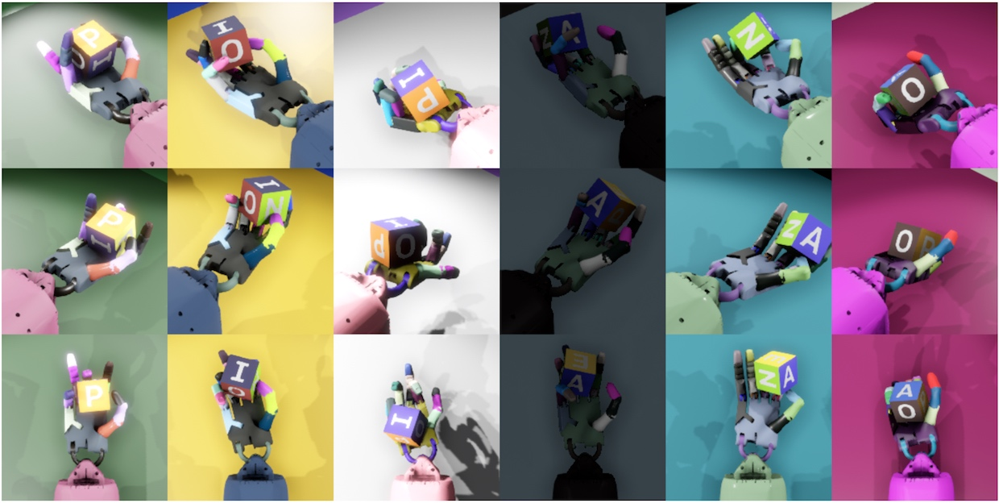

This week, I made my first attempt of determining what project I wanted to work on. My initial idea was based off of a technique I had seen used in the training of an OpenAI robot hand that learned to turn a cube via reinforcement learning inside of vitual reality. One of the key insights into how to get a system like this to work, is that they used domain randomization. This means that many of the colors and positions and other physical properties of things within the simulation were randomized between trials.
This forced the AI mechanisms they were using to generalize over a range of values, which helps them to be more robust in the real world. I wanted to explore ideas to see if I could come up with a process that would create a domain randomizer for any domain. That is, instead of OpenAI researchers determining what properties should be changed and within what ranges, they should be able to feed my program video feeds of the real situation, and the program would be able to determine properties that should be changed and within what range in order to have the best overall simulator for training the hand controller.
This idea led me straight into researching adversarial attacks on neural networks. Why? Well, adversarial attacks are done by very slightly changing an input image in order to trick a neural network into picking a different answer. (This Quora answer gives a decent overview of this phenomena.)